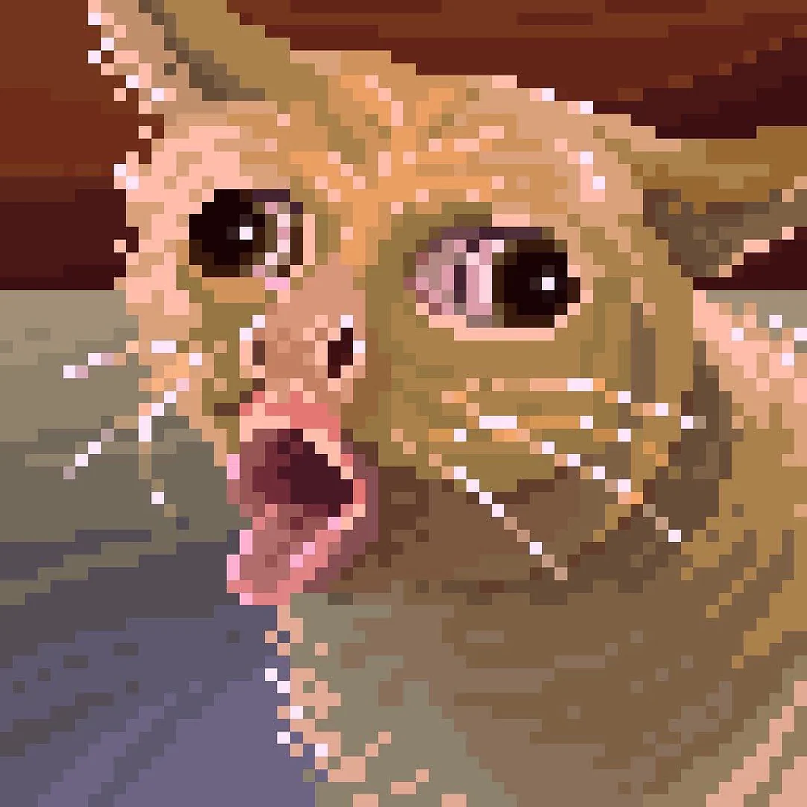

This is gonna be a terminal text editor in Rust using ncurses.
Lisp Interpreter in HaskellThis was one of my first haskell projects I did and it was a total blast. It's a basic repl that supports some simple lisp operations and functions and also has an enviornment to store your variable and function definitions.
Terminal TCP Client and Server in ElixirThis was a simple TCP client and server I wrote in Elixir to explore the language and see how the TCP protocol works.
Blazingly Fast Image Format in RustThis was a insanely performant and blazingly fast image format written in blazingly fast Rust. It's very special because you can actually write it by hand and if you get tired of writing it by hand you can always switch from English to one of the other suported languages.
This is my totally original game in Racket cause I wanted to learn some more lisp! You can also customize the wordbank if you want by editing the words.txt file.

If you would like to reach out for any reason my email is dubstepaztec35@gmail.com and you can also add me on Discord my user is dubstepaztec